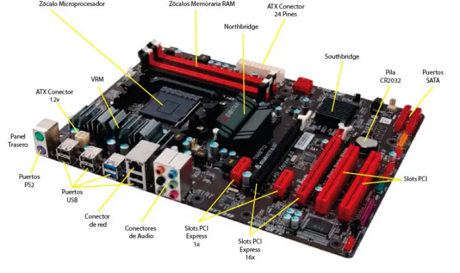
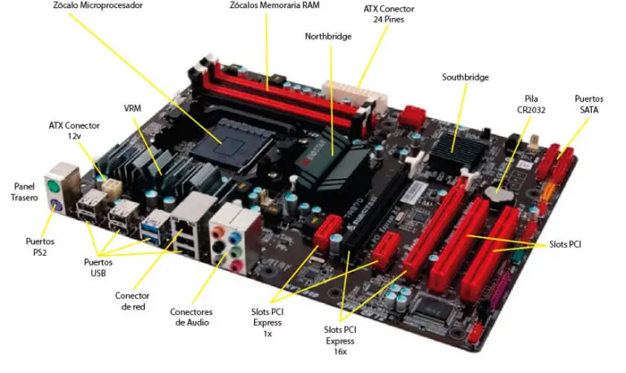
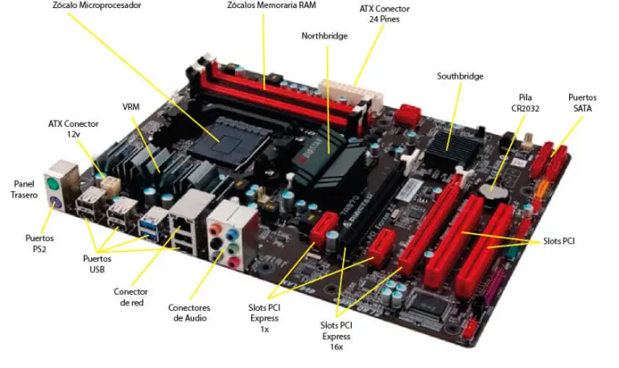

Ejemplo de como se ven
 

El northbridge y southbrige se encargaban de gestionar el paso de datos y corrientes entre los componentes, pero actualmente, eso lo hace el procesador.
Una motherboard (o placa base) es el componente principal de una computadora que conecta y permite la comunicación entre todos los demás componentes del sistema.
Socket de CPU: Es el zócalo donde se inserta el procesador. Ejemplos son LGA 1200 (Intel) o AM4 (AMD).
Slots de RAM: Ranuras donde se instalan los módulos de memoria RAM. Por ejemplo, DDR4 DIMM.
Chipset: El conjunto de chips que controla la comunicación entre los componentes de la computadora.
Ranuras PCIe (PCI Express): Para tarjetas de expansión como tarjetas gráficas, de sonido o de red. Ejemplos incluyen PCIe x16 para tarjetas gráficas y PCIe x1 para otras tarjetas de expansión.
Conectores SATA: Para conectar dispositivos de almacenamiento como discos duros y unidades SSD.
Puertos M.2: Para unidades de almacenamiento M.2, que son más rápidas y compactas que las SATA.
Conectores de energía: Incluyen el conector de 24 pines para la alimentación principal y conectores adicionales de 4/8 pines para el CPU.
Puertos USB: Tanto internos como externos para conectar dispositivos periféricos.
Conectores de ventiladores: Para conectar los ventiladores que enfrían los componentes de la computadora.
Puertos de E/S traseros: Incluyen puertos USB, HDMI, DisplayPort, conectores de audio, Ethernet, entre otros.
Ejemplo de como se ven

El northbridge y southbrige se encargaban de gestionar el paso de datos y corrientes entre los componentes, pero actualmente, eso lo hace el procesador.